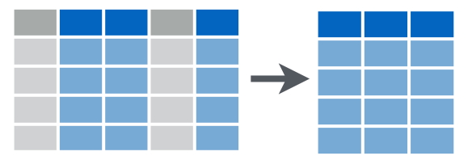
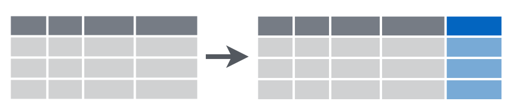

Tema 03 - Manipulación de datos con dplyr (una sola tabla)
Prof.: Pedro Albarrán
Prof.: Alberto Pérez
Universidad de Alicante, Curso 2020/21
Ordenando los datos
Para visualizar y analizar los datos de forma efectiva, necesitamos que los datos estén en un formato que llamaremos “ordenado” (“tidy” en inglés). Tener los datos almacenados en un formato “ordenado” es más que lo que la definición coloquial del término “ordenado” podría sugerir. No se trata solo de disponer de datos “ordenadamente organizados” como en una hoja de cálculo, donde cada columna es una variable y cada fila es una observación. Definimos el término “ordenado” de una manera más rigurosa, esbozando un conjunto de reglas por las que se pueden almacenar los datos y las implicaciones de estas reglas en los análisis.
El conocimiento de este tipo de formateo de datos no fue necesario en nuestro tratamiento de visualización de datos, porque todos los datos ya estaban en formato ordenado. Veremos que tener datos ordenados permite crear visualizaciones de datos más fácilmente y también analizar los datos con modelos estadísticos.
El proceso completo para analizar los datos puede describirse en este esquema 
Para realizar un análisis de datos adecuado y comunicar de forma efectiva, se requiere una tarea previa de “tratamiento” de datos que suele suponer más de la mitad del tiempo total de un proyecto de análisis de datos. Las tareas de limpieza, transformación y manipulación de datos se denominan habitualmente como “data wrangling” (pelearse con los datos) o “data munging”. Este trabajo “sucio” es clave para obtener información útil en la toma de decisiones. Este artículo de “The New York Times” deja claro desde su título esta idea “‘Janitor Work’ Is Key Hurdle to Insights”. El experto Jeffrey Heer afirma
It’s an absolute myth that you can send an algorithm over raw data and have insights pop up.
El paquete tidyverse
El meta-paquete tidyverse incluye una colección de paquetes que ayudan en todo el proceso “ordenación de datos”. El núcleo de tidyverse lo componen los siguientes paquetes (podéis ver una descripción aquí):
ggplot2tibbletidyrreadrpurrrdplyr
A su vez estos se integran con otros paquetes importantes del “ecosistema” de R: 
En esta y siguientes sesiones, primero vamos a usar dplyr para manipular un conjunto de datos ordenados (la parte transformadora del ciclo en el gráfico anterior). Luego volveremos a la parte de ordenar/organizar unos datos desordenados usando tidyr.
Manipulacion de datos con dplyr
Esta sección explora las principales funciones en dplyr que Hadley Wickham describe como una gramática de manipulación de datos – el contrapunto a su gramática de gráficos en ggplot2. Notar que una gramática consiste en verbos, sustantivos y objetos directos.
El paqute dplyr fue diseñado para:
- proporcionar herramientas de manipulación de datos de uso común;
- tener un rendimiento rápido para operaciones en memoria;
- abstraer la interfaz entre las operaciones de manipulación de datos y la fuente de datos.
Nota sobre “Data frames” y “Tibbles”
Las funciones dplyr operan sobre “data frames” (marcos de datos), pero también en “tibbles”, una versión recortada de un “data frame” (tbl_df) que proporciona una mejor comprobación e impresión visual. Los “tibbles” son particularmente buenos para los conjuntos de datos grandes ya que sólo muestran las primeras 10 filas y las primeras 7 columnas por defecto, aunque se proporciona información adicional sobre las filas y columnas.
Por ejemplo, si usamos el “data frame” ggplot2::presidential.
library(dplyr)
library(ggplot2)
data("presidential")
presidentialtenemos el nombre, fecha de comienzo y finalización del mandato y partido de los presidentes de EE.UU. Pero presidential no se muestra como un data frame habitual porque es un tibble. Estos fueron diseños para datos con muchas filas y/o columnas, es decir, “big data”. En este caso la función print combina características de head y de str. Podemos ver el tipo de datos y su ruta de herencia (relación con otros tipos de objetos) con class():
class(presidential)A efectos de comparación, podéis ver cómo se muestra un data frame tradicional.
MASS::Boston
as_tibble(MASS::Boston)Los cinco verbos
El creador de dplyr (y ggplot2), Hadley Wickham, argumenta que la mayoría de las operaciones que es necesario realizar en una tabla de datos pueden ser logradas usando combinaciones de los siguientes cinco “verbos”:
select()filter()mutate()(yrename())arrange()summarize()
select(): selecciona columnas (variables) en un data frame;
filter(): selecciona filas (observaciones) en un data frame;
mutate(): añade nuevas columnas a un data frame;
- también
rename(): cambiar el nombre de una columna de un data frame;
- también
arrange(): re-ordena filas en un data frame;

summarise(): contrae/colapsa un data frame en una sola fila;
Todos los verbos funcionan de manera similar:
El primer argumento es un data frame.
Los argumentos siguientes describen qué hacer con el data frame, usando los nombres de variables (sin comillas).
El resultado es un nuevo data frame (realmente une
tbl_df)
Juntas, estas propiedades hacen que sea fácil encadenar múltiples pasos simples para lograr un resultado complejo. Veremos como estas operaciones se pueden encadenar con el operador de tuberías o “pipes” (%>%), tomado del operador “|” de los lenguajes de consola de Unix y similares.
Todas estas funciones se pueden utilizar conjuntamente con group_by(), lo que cambia el alcance de cada función al pasar de operar en todo el conjunto de datos a hacerlo grupo por grupo. Estas funciones proporcionan los verbos para un lenguaje de manipulación de datos.
En caso de duda, se puede mirar la chuleta de transformación de datos. También se pueden encontrar online esta y otras chuletas de R y RStudio aquí; notad que existen versiones en castellano de algunas de ellas.
Una pequeña digresión sobre historia
El enfoque de Wickham se inspira en su deseo de desdibujar los límites entre R y la omnipresente sintaxis de consulta de la base de datos relacional SQL. De hecho, los cinco verbos, cuando se combinan, muestran una estrecha similitud con las declaraciones de consulta SQL (al menos para fines de análisis de datos). De este modo, el dominio de los verbos de dplyr para manipulación de datos se ha convertido en una puerta de entrada para analizar “big data”, tanto a través del sistema de gestión de bases de datos relacionales como más allá. El verdadero poder de dplyr es que abstrae la fuente de datos, es decir, no importa si es un data frame, una base de datos o Spark.
De hecho, el paquete estadístico “SAS” siempre ha tenido una poderosa herramienta que hace más o menos lo mismo, desde la década de 1970.
Primer ejemplo
Seleccionar variables y filtrar filas
presidentialPara recuperar sólo los nombres y partidos de estos presidentes, usaríamos select(). El primer argumento para la función select() es el data frame, seguido de una lista arbitrariamente larga de nombres de columnas, separados por comas.
select(presidential, name, party)Para recuperar sólo a los presidentes republicanos, utilizamos filter(). El primer argumento para filter() es un data frame, y los argumentos siguientes son condiciones lógicas que se evalúan en cualquier columna involucrada.
filter(presidential, party == "Republican")Anidamiento y tuberías
Naturalmente, la combinación de los comandos filter() y select() permite profundizar en información muy específica. Por ejemplo, podemos encontrar los presidentes demócratas que sirvieron desde Watergate.
select(filter(presidential, start > 1973 & party == "Democratic"), name)En la sintaxis mostrada anteriormente, la operación filter() está anidada dentro de la operación select(). Cada uno de los cinco verbos toma y devuelve un data frame, lo que hace posible este tipo de anidamiento.
ejemplo <- select(filter(presidential, start > 1973 & party == "Democratic"), name)
dim(ejemplo)
head(ejemplo)
class(ejemplo)Estas largas expresiones se vuelven muy difíciles de leer. En su lugar, recomendamos el uso del operador %>% (tubería).
presidential %>%
filter(start > 1973 & party == "Democratic") %>%
select(name)Notar como la expresión dataframe %>% filter(condition) es equivalente a filter(dataframe, condition).
La tubería anterior se lee como
Tomar el data frame
presidential, entonces filtrar a los presidentes demócratas cuyo año de inicio es mayor que 1973. A continuación, seleccionar la variablename.
Mutar variables para crear nuevas variables
Frecuentemente, en el proceso de análisis de datos, crearemos, redefiniremos y re-nombraremos algunas de nuestras variables. Las funciones mutate() y rename() proporcionan estas capacidades.
Si bien tenemos los datos brutos sobre la fecha de inicio y finalización del mandato, no tenemos una variable numérica que indique la duración del mandato de cada presidente.
mypresidents <- presidential %>%
mutate(term_length = end - start)
head(mypresidents,2)En esta situación, generalmente se considera un buen estilo crear un nuevo objeto en lugar de “machacar” el que proviene de una fuente externa. Para preservar el data frame presidenciales existente, guardamos el resultado de mutate() como un nuevo objeto llamado mypresidents.
La forma en que opera rename() es muy similar:
presidential %>%
rename(nombre = name) Organizar filas
La función sort() ordenará un vector, pero no un data frame. La función que clasificará un data frame se llama arrange().
Para ordenar nuestro data frame por la duración del mandato de cada presidente, especificamos que queremos la columna term_length en orden descendente.
mypresidents %>% arrange(desc(term_length))Varios presidentes concluyeron uno o dos mandatos completos, por lo que tienen exactamente la misma duración (4 u 8 años, respectivamente). Para romper estos empates, podemos clasificarlos adicionalmente por start.
mypresidents %>% arrange(desc(term_length), start)Resumir todo el conjunto de datos o para cada grupo
El último de los cinco verbos para el análisis de una sola tabla es summarize(), que a menudo se usa en conjunción con group_by(). Los verbos anteriores nos proporcionaron los medios para manipular un data frame de maneras poderosas y flexibles. Pero la extensión del análisis que podemos hacer con estos cuatro verbos es limitada. Por otra parte, summarize() con group_by() nos permite hacer comparaciones.
Cuando se usa solo, summarize() colapsa un data frame en una sola fila. Tenemos que especificar cómo queremos reducir una columna entera de datos en un solo valor.
library(lubridate)
mypresidents %>%
summarize(
N = n(),
first_year = min(year(start)),
last_year = max(year(end)),
num_dems = sum(party == "Democratic"),
avg_term_length = mean(term_length)
)En este ejemplo, la función n() simplemente cuenta el número de filas. Esto es casi siempre información útil. (También se puede usar n_distinct()). La siguiente variable determina el primer año en que uno de estos presidentes asumió el cargo. Este es el año más pequeño en la columna de start. La variable num_dems simplemente cuenta el número de filas en las que el valor de la variable de partido era demócrata.
Esto plantea la pregunta de si los presidentes demócratas o republicanos cumplieron un mandato promedio más largo durante este período de tiempo. Para resolver esto, podemos ejecutar summarize() de nuevo, pero esta vez, en lugar de que el primer argumento sea el data frame de mypresidents, especificaremos que las filas del data frame de los mypresidents deben ser agrupadas por los valores de la variable party. De esta manera, los mismos cálculos que los anteriores se llevarán a cabo para cada una de los partidos por separado.
mypresidents %>%
group_by(party) %>%
summarize(
N = n(),
avg_term_length = mean(term_length)
)
# Comparar el data.frame intermedio group_by(mypresidents,party) con mypresidentsLa tuberia (“pipe”)
La tubería, %>%, proviene del paquete magrittr de Stefan Milton Bache. Los paquetes en el tidyverse cargan %>% automáticamente.
El método abreviado de teclado para escribir %>% es
- Cmd + Shift + M (Mac)
- Ctrl + Shift + M (Windows, PC)
Notad que el operador de tubería se puede aplicar a cualquier función que hemos visto anteriormente (no solo verbos de manipulación de datos)
log(10)
10 %>% log()
presidential %>% names()
mypresidents %>% nrows()En el caso de los gráficos de ggplot2 se utiliza +, que es exclusivo de este paquete, en lugar de %>%. La única razón está en que ggplot2 fue desarrollado antes que el operador de tuberias. El autor de ggplot2 ha reconocido que si “volviera atrás en el tiempo” usaría el operador de tuberías.
Suplemento
Comparaciones para filter()
El primer argumento de la función filter() es el conjunto de datos (normalmente suministrado a través de tuberías).
El segundo argumento de filter() es un vector lógico: es decir, un vector que consiste en TRUE y FALSE. Sólo se conservan las filas en las que la condición se evalúa a “VERDADERO”.
El vector lógico se crea comparando una o más variables.
Los operadores lógicos básicos son
>,>=,<,<=,!=(no igual), y==(igual).Para la comparación de conjuntos, se utiliza
x %in% Y, que es cierto cuandoxes un elemento del conjuntoY.Cuando se combinan dos o más comparaciones, se usan operadores booleanos:
&(y),|(o),!(no),
Suponga que x es una variable con cuatro observaciones. ¿Cuál es el vector lógico resultante?
x <- c(2,1,3,0)
x == 0
!(x == 0)
x == 0 | x == 1
x %in% c(0,1)Seleccionar muchas variables
El conjunto de datos presidential sólo tiene cuatro variables, por lo que la selección de variables tiene un poco de sentido. Para seleccionar variables para conjuntos de datos con un gran número de variables, hay algunas opciones útiles.
Para demostrarlo, cargamos el data frame nycflights13::flights que contienes 19 variables (tampoco un número terriblemente grande).
#install.packages("nycflights13")
library(nycflights13)
flightsSeleccionar unas pocas variables es fácil:
select(flights, year, month, day)Para seleccionar todas las variables desde la variable
yearhasta la variablearr_time:select(flights, year:arr_time)(para no tener que escribir todos los nombres de variables)Para seleccionar todas las variables excepto
year, month, day:select(flights, -(year:day))Existen varias funciones de ayuda que puede utilizar dentro de
select():starts_with("abc"): para los nombres que comienzan con “abc”.ends_with("xyz"): para todos los nombres que acaban con “xyz”.contains("ijk"): para los nombres que contienen “ijk”.num_range("x", 1:3): para x1, x2 y x3.matches("(.)\\1"): selecciona las variables que coinciden con una expresión regular (en este caso, cualquier variable que contenga caracteres repetidos).
Manejo de valores ausentes
Una característica importante de la R que puede hacer complicada la comparación son los valores ausentes (faltantes), o NAs (“no disponibles”).
library(nycflights13)
head(is.na(flights$dep_delay))
flights %>%
summarize(num_flights = n(), missing_delay = sum(is.na(dep_delay))) %>%
mutate(missing_pct = missing_delay / num_flights)NA representa un valor desconocido, por lo que los valores que faltan son “contagiosos”: casi cualquier operación que implique un valor desconocido también devolverá un valor desconocido. Todas las operaciones siguientes devuelven NA.
x <- NA
x > 5
x + 10
x == x
flights %>%
summarize(num_flights = n(), mean_delay_NA = mean(dep_delay),
mean_delay = mean(dep_delay, na.rm = TRUE))Para comprobar si los elementos de x son NA, se usa is.na(x).
Por ejemplo, para filtrar todas las observaciones con valores que faltan <dataframe> %>% filter(!is.na(<variable>)):
flights %>%
filter(!is.na(dep_delay)) %>%
summarize(num_flights = n(), missing_delay = sum(is.na(dep_delay)))También podemos usar los argumentos que algunos comandos tienen para eliminar valores ausentes (típicamente, na.rm=TRUE, pero en cor() es use = "complete.obs") o bien usar la función na.omit():
flights %>%
summarize(num_flights = n(), mean_delay_NA = mean(dep_delay),
mean_delay = mean(dep_delay, na.rm = TRUE))
flights %>%
na.omit() %>%
summarize(num_flights = n(), mean_delay_NA = mean(dep_delay),
mean_delay = mean(dep_delay, na.rm = TRUE))